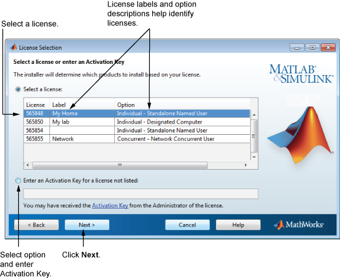

从与 MathWorks® 帐户关联的许可证列表中选择许可证，然后点击“下一步”。
如果要安装的产品并不是与 MathWorks 帐户关联的许可证所包含的产品：
选择“输入未列出的许可证的激活密钥”选项。
输入激活密钥并点击“下一步”。
激活密钥是确认许可证的唯一代码。使用激活密钥可激活许可证，允许经许可的最终用户使用激活密钥将自己的 MathWorks 帐户与许可证相关联。许可证管理员联系人可以通过访问 MathWorks 网站上的许可证中心来获取该密钥。如果您购买了 MATLAB® 学生用软件，则您的产品包中包含激活密钥。或者，您可以访问 MathWorks 网站上的许可证中心来获取该密钥。
